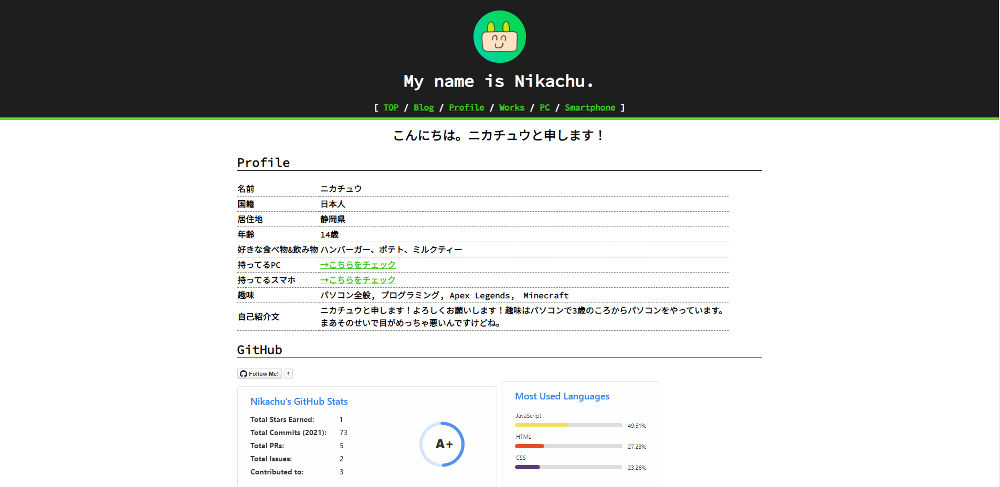
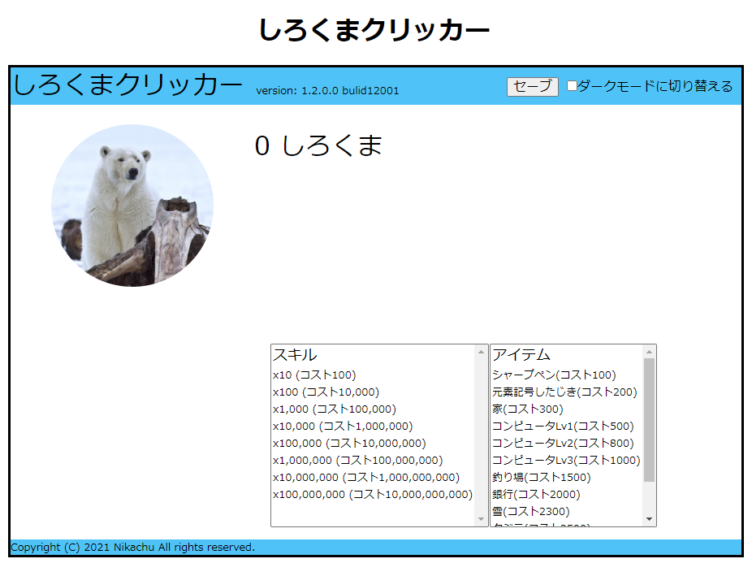

Works
作った作品を紹介します。portfolio
 自己紹介用のポートフォリオ的なものを作ってみたくて作りました。適当な情報を書いてます
GitHubリポジトリはこちら
Nikachu's portfolio
Realtime-Clock
 ただの時計です。右側にアナログ時計、左側にデジタル時計があります。
ただの時計です。右側にアナログ時計、左側にデジタル時計があります。時間はサーバーに接続しているとかではなく、PCの内部時計を取り出しています。
サーバーからとってくる時計も作ってみたいですが、まだまだ勉強していかないといけないなぁと思っています。
静岡県ジュニアプロコンに提出したものもこれです。
デジタル時計、デジタル＆アナログ時計、カウントダウンタイマーの３つが入っています。
GitHubリポジトリはこちら
Realtime-clock
しろくまクリッカー
クッキークリッカーのパクリです。適当に作りました。
しろくまクリッカー
しろくまクリッカーベータ版
しろくまクリッカーリポジトリ